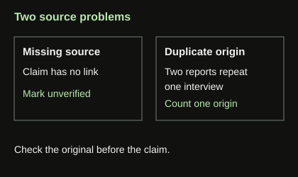

Guide / Evidence/ Source librarySource records Look up the original evidence, its date, the relevant version and the limits of each claim.
Source register Retrieval date for this edition: November 20, 2026. An access date does not establish a release date. Duplicate records from one publication count as one origin. Search this page or filter the guide to Evidence.

A missing citation and repeated coverage are different problems. Check the original source. Full-size figure
Cursor plugins · repository metadata
Publication Not in source Version or release Not in source
Supports Names Lauren Tan as author of pstack. Limit Mutable main branch. Does not establish Potetoa identity. Original source or accessible record ↗ C02 · poteto gists
poteto · profile
Publication Not in source Version or release Not in source
Supports Profile uses lauren poteto. Limit Does not prove Potetoa is the same account. Original source or accessible record ↗ C03 · Claude Code Live
Anthropic · webinar page
Publication Not in source Version or release Not in source
Supports Names Boris Cherny, Cat Wu and Cal Rueb with Anthropic roles. Limit No transcript or timestamp inspected. Original source or accessible record ↗ C04 · skills
Matt Pocock · repository
Publication Not in source Version or release Not in source
Supports Repository contains agent workflow skills. Limit Mutable branch. Exact historical version not checked. Original source or accessible record ↗ C05 · We Built an AI Codie
Contrarian Thinking · newsletter
Publication Not in source Version or release Not in source
Supports Describes a conversational business advice product based on Codie source material. Limit Promotional first-party account. Technical method, costs and evaluation are unspecified. Original source or accessible record ↗ C06 · Claude Code Best Practices
Anthropic · engineering article
Publication 2025-04-18 Version or release Not in source
Supports Describes explore, plan, code and commit. Limit Advice from vendor. Results vary by task. Original source or accessible record ↗ C07 · How Ramp engineering operates at hyperspeed with Claude Code
Anthropic · customer case
Publication 2025-04-30 Version or release Not in source
Supports Reports test loops, parallel sessions and incident tool integration. Limit Vendor case. Claims are not controlled independent results. Original source or accessible record ↗ C08 · Apollo accelerates outbound sales at scale with Claude
Anthropic · customer case
Publication 2025-06-11 Version or release Claude 3.5 Haiku
Supports Describes AI Copywriter for outbound messages. Limit Vendor case. Does not establish causal impact or complete operating cost. Original source or accessible record ↗
Anthropic · customer case
Publication 2025-01-08 Version or release Not in source
Supports Describes routing between AI and human agents. Limit Vendor case. State, schedule and costs are not fully disclosed. Original source or accessible record ↗ C10 · Using GPT-4 to deliver a new customer service standard
OpenAI · customer case
Publication Not in source Version or release GPT-4
Supports Describes model turns, tools, knowledge and coaching for customer support. Limit Vendor case. Does not disclose complete deployment economics. Original source or accessible record ↗ C11 · How we built our multi-agent research system
Anthropic · engineering article
Publication 2025-06-13 Version or release Not in source
Supports Describes lead-worker research, search and evaluation tradeoffs. Limit Vendor reports its own system. Costs and outcomes do not transfer automatically. Original source or accessible record ↗ C12 · Demystifying evals for AI agents
Anthropic · engineering article
Publication 2026-01-09 Version or release Not in source
Supports Explains agent evals and grading approaches. Limit Vendor guidance. Graders require validation. Original source or accessible record ↗ C13 · Leakage and the Reproducibility Crisis in ML-based Science
Kapoor and Narayanan · research paper
Publication 2022-07-14 Version or release arXiv:2207.07048
Supports Describes leakage taxonomy and reproducibility failures. Limit Survey scope and taxonomy do not prove leakage in a particular experiment. Original source or accessible record ↗ C14 · How Claude Code is used in practice
Anthropic · research report
Publication Not in source Version or release Not in source
Supports Reports observed decision allocation in sampled sessions. Limit Classifier-based observation. Not a randomized causal study. Original source or accessible record ↗ C15 · How to build a vertical AI agent startup
Greg Isenberg · public post
Publication Not in source Version or release Not in source
Supports Proposes mapping a workflow and monitoring failures. Limit Prescriptive public post. Not evidence every recommendation is deployed or effective. Original source or accessible record ↗ C16 · Ways I use AI for coding
Matt Pocock · public post
Publication Not in source Version or release Not in source
Supports Describes planning and review for features and bug work. Limit Firsthand account. No controlled comparison. Original source or accessible record ↗ C17 · Press
Contrarian Thinking · official press page
Publication Not in source Version or release Not in source
Supports Identifies Codie Sanchez as founder and CEO. Limit Roles may change. Original source or accessible record ↗ C18 · Building effective agents
Anthropic · engineering article
Publication 2024-12-19 Version or release Not in source
Supports Discusses customer support tools and human review. Limit General guidance, not a complete implementation. Original source or accessible record ↗ C19 · Claude Code Best Practices
Anthropic · engineering article
Publication 2025-04-18 Version or release Not in source
Supports Documents public employee workflow guidance. Limit Guidance and interface may change. Original source or accessible record ↗ C20 · Grok Bot guide
lauren @poteto · public post mirror
Publication 2026-10-31 Version or release Not in source
Supports Firsthand guidance on bot skills, routines, filtered events and costs. Limit Mirror of a public post. Product behavior and pricing can change. Original source or accessible record ↗ C21 · Tibot and account monitoring
lauren @poteto · public post mirror
Publication 2026-10-27 Version or release Not in source
Supports Reports a scheduled digest and states that she writes her own posts. Limit Mirror. Actual accuracy, costs, permissions and full configuration not independently verified. Original source or accessible record ↗ C22 · Release manager bots
lauren @poteto · public post mirror
Publication Not in source Version or release Not in source
Supports Reports a release workflow with Slack, build monitoring, testing and human decisions. Limit Mirrored profile. Post date and actual results not independently established. Original source or accessible record ↗ C23 · Tibo LOUIS-LUCAS
Tibo LOUIS-LUCAS · official video channel
Publication Not in source Version or release Not in source
Supports Channel names Tibo LOUIS-LUCAS and links @tibo_maker. Limit Does not prove the supplied Tibo lead refers to this person. Original source or accessible record ↗ C24 · Grok Bot setup notes
Greg Isenberg · public post mirror
Publication 2026-11-11 Version or release Not in source
Supports Reports ideas from a guest including scheduled content ideas and project bots. Limit Host summary. Guest demonstration and product claims not independently verified. Original source or accessible record ↗ C25 · I Tried The Easiest Ways To Make Money With AI
Codie Sanchez · video
Publication 2026-11-11 Version or release Not in source
Supports Public video identified through its listing. Limit Transcript not inspected. No results, spending or income are asserted. Original source or accessible record ↗ C26 · Use Grok Bot Better Than 99% of People
Greg Isenberg · video
Publication 2026-11-11 Version or release Not in source
Supports Video identified through the host public post. Limit Transcript not inspected. Post supplies only host summary. Original source or accessible record ↗ C27 · All Code Is Slop Except Mine
Lauren Tan · video
Publication 2026-11-14 Version or release Not in source
Supports Public engineering talk linked by the speaker. Limit Recording and transcript not inspected. No numerical outcome asserted. Original source or accessible record ↗ E01 · Harness engineering: leveraging Codex in an agent-first world
Ryan Lopopolo, OpenAI · Firsthand engineering report
Publication 2026-02-11 Version or release Codex project described in February 2026
Supports Use a small repository map and executable constraints for changes. Limit One team's experience. No controlled time comparison. Original source or accessible record ↗ E02 · Effective harnesses for long-running agents
Anthropic Engineering · Firsthand engineering report
Publication 2025-11-26 Version or release Claude Agent SDK experiment
Supports A feature ledger and progress artifacts allowed subsequent sessions to resume work. Limit Application-specific trials. The report describes premature completion and context loss. Original source or accessible record ↗ E03 · Demystifying evals for AI agents
Anthropic Engineering · Engineering guidance
Publication 2026-01-09 Version or release January 2026 article
Supports Assess both final state and trajectory. Different graders answer different questions. Limit A grader can fail even when the task succeeds. Check against human judgment. Original source or accessible record ↗ E04 · Measuring the impact of early-2025 AI on experienced open-source developer productivity
Joel Becker, Nate Rush, Beth Barnes and David Rein, METR · Randomized field study
Publication 2025-07-10 Version or release Early 2025 tools
Supports Sixteen developers took 19% longer on average with AI available on tasks in their own projects. Limit 246 tasks in mature repositories. Limited population, tools and time period. Original source or accessible record ↗ E05 · We are changing our developer productivity experiment design
METR · Follow-up and methods critique
Publication 2026-02-24 Version or release August 2025 follow-up study
Supports Selection bias and concurrent work obscured later productivity estimates. Limit No reliable speedup estimate for current users. Original source or accessible record ↗ E06 · git-worktree
Git project · Reference manual
Publication Not in source Version or release Local command verified with Git 2.56.0
Supports A linked worktree can check out a separate branch from the same repository. Limit Separate files do not isolate shared services, fixtures or ports. Original source or accessible record ↗ E07 · Canarying releases
Google, The Site Reliability Workbook · Engineering handbook
Publication Not in source Version or release Chapter 16
Supports Evaluate a small release population against a control before rollout. Limit Choice of signals, comparison group and duration depends on traffic. Original source or accessible record ↗ E08 · Prompt caching in the API
OpenAI · Release announcement
Publication 2024-10-01 Version or release Launch-era OpenAI API
Supports Reusing eligible input prefixes can lower processing time and input cost. Limit Launch prices and model eligibility are historical. No consumer application timing claim. Original source or accessible record ↗ E09 · How we built our multi-agent research system
Anthropic Engineering · Firsthand engineering report
Publication 2025-06-13 Version or release Claude Research system described in June 2025
Supports Parallel search can explore independent sources. The team reported substantially higher token use. Limit Vendor's workloads, tools and comparison conditions limit transfer. Original source or accessible record ↗ E10 · Harness design for long-running application development
Anthropic Engineering · Firsthand engineering report
Publication 2026-03-24 Version or release March 2026 experiment
Supports Independent browser interaction exposed defects missed by self-evaluation. Limit Adding a reviewer also adds work. No speed guarantee. Original source or accessible record ↗ E11 · Building effective agents
Anthropic · Engineering guidance
Publication 2024-12-19 Version or release December 2024 design patterns
Supports Choose fixed workflows, routing or dynamic agent control according to task structure. Limit Patterns guide architecture. They provide no measured benefit for a particular project. Original source or accessible record ↗ E12 · Building a C compiler with a team of parallel Claudes
Nicholas Carlini, Anthropic · Firsthand engineering report
Publication 2026-02-05 Version or release Claude Opus 4.6
Supports The team used a compiler and external tests as oracles. The author reported API costs just under $20,000. Limit One unusually testable project. Historical project costs cannot price another task. Original source or accessible record ↗ R01 · autoresearch experiment program
Andrej Karpathy · Original repository procedure
Publication March 2026 (project introduction) Version or release Public program and README at retrieval
Supports Defines a constrained training experiment, a fixed budget, a validation metric and experiment records. Limit The training environment needs a compatible setup. This guide adapts the decision structure using its CPU benchmark. Original source or accessible record ↗ R02 · Predict-then-attribute loop, discussion 340
Hzz-Git · Firsthand GitHub discussion and reported experiment
Publication 2026-03-19 Version or release Single M5 Pro experiment, four instruction variants
Supports The author compared instruction variants, including explicit prediction and error attribution. Limit One run per arm and unequal trial counts. Results were reported by the author and not independently reproduced here. Original source or accessible record ↗ R03 · Create a model response: usage fields
OpenAI · API reference
Publication Not in source Version or release Responses API usage object at retrieval
Supports The usage record separates input and output totals with nested details for cached and reasoning tokens. Limit A client may hide these fields. Actual charges also depend on model, rate and tool use. Original source or accessible record ↗ N01 · A new feature for my blog, built using my voice
Simon Willison · Practitioner post
Publication 2026-10-09 Version or release Codex voice example
Supports Voice-led draft, typed code review, API-based import repair. Limit Single blog workflow and author account. Original source or accessible record ↗
Simon Willison · Merged pull request
Publication 2026-10-09 Version or release PR #719
Supports Eight commits, archive feature and review trail. Limit Private input and production credentials are outside the public example. Original source or accessible record ↗ N03 · Hide your slop PR descriptions behind details and summary
Simon Willison · Practitioner post
Publication 2026-11-09 Version or release PR description practice
Supports Short human-written context ahead of collapsible agent notes. Limit No measured effect on reviewer throughput. Original source or accessible record ↗ N04 · Redesign row page as a vertical list of fields
Simon Willison · Repository pull request
Publication 2026-11 Version or release PR #3052
Supports Concrete wide-record issue, vertical field layout and screenshot. Limit Example illustrates this change. Original source or accessible record ↗ N05 · Pi: The Minimal Agent Within OpenClaw
Armin Ronacher · Practitioner post
Publication 2026-01-31 Version or release Pi as described in January
Supports Tree-based review context and dependency callouts. Limit Describes one practitioner's extension setup. Original source or accessible record ↗ N06 · Pi review extension source
Armin Ronacher · Source file
Publication Not in source Version or release main
Supports Public implementation of the review extension. Limit Branch content can change. Original source or accessible record ↗
Pi maintainers · Source repository
Publication Not in source Version or release Current repository
Supports Pi source and entry point for client documentation. Limit Original badlogic/pi-mono link redirects to this repository. Original source or accessible record ↗ N08 · My AI Adoption Journey
Mitchell Hashimoto · Practitioner post
Publication 2026-02-05 Version or release Personal workflow
Supports Repository rules and programmed checks to prevent repeat failures. Limit Author experience gives no controlled productivity estimate. Original source or accessible record ↗ N09 · Ghostty inspector instructions
Ghostty maintainers · Source file
Publication Not in source Version or release ca07f8c3f775fe437d46722db80a755c2b6e6399
Supports Generated C API lookup, widget reference and no inspector unit tests at this revision. Limit Scope covers the inspector directory. Original source or accessible record ↗ N10 · Shipping at Inference-Speed
Peter Steinberger · Practitioner post
Publication 2025-12-28 Version or release Personal workflow
Supports CLI-first verification and documentation discovery. Limit Historical models and personal branching workflow are context-specific. Original source or accessible record ↗ N11 · Docs-list script
Peter Steinberger · Source file
Publication Not in source Version or release main
Supports Script for discovery of Markdown documents and frontmatter. Limit Main can change. Original source or accessible record ↗ N12 · Ralph Wiggum as a software engineer
Geoffrey Huntley · Practitioner post
Publication 2025-07-14 Version or release Original Ralph writeup
Supports Repository plan and specifications reread during an agent loop. Limit Open-ended original loop is a historical case. Original source or accessible record ↗ N13 · We Put a Coding Agent in a While Loop and It Shipped 6 Repos Overnight
RepoMirror authors · Public repository report
Publication Not in source Version or release main
Supports Hackathon trials with task files and uneven outcomes. Limit Self-reported prototypes with no independent production validation. Original source or accessible record ↗ N14 · An AI state of the union
Lenny Rachitsky and Simon Willison · Podcast video
Publication 2026-04-02 Version or release 21:27 and 1:08:21
Supports Prototype comparison and red/green TDD chapter markers. Limit Single guest's account. Original source or accessible record ↗ N15 · Highlights from my conversation about agentic engineering on Lenny's Podcast
Simon Willison · Practitioner post
Publication 2026-04-02 Version or release 21:27
Supports Guest notes with chapters and prototype-evaluation discussion. Limit Selected excerpts. Original source or accessible record ↗ N16 · Running the full server-side Datasette Python app in the browser with service workers and Pyodide
Simon Willison · Engineering post
Publication 2026-11-17 Version or release Datasette Lite architecture
Supports Previous HTML insertion failure and tab-specific worker routing repair. Limit Case study does not benchmark all browsers. Original source or accessible record ↗ N17 · Measuring the Impact of Early-2025 AI on Experienced Open-Source Developer Productivity
METR · Randomized study summary
Publication 2025-07-10 Version or release Early-2025 study
Supports Reported 19 percent longer task time for the study sample with AI access. Limit Specific developers, tasks and tool period. Original source or accessible record ↗ N18 · We are Changing our Developer Productivity Experiment Design
METR · Research update
Publication 2026-02-24 Version or release Follow-up
Supports Explains tentative later results and selection and measurement problems. Limit Weak evidence for magnitude of later speedup. Original source or accessible record ↗ O01 · Grok Bot: make a 1 person company with agents
Billy Howell and Greg Isenberg, The Startup Ideas Podcast · Firsthand operator interview and publisher chapter notes
Publication 2026-08-21 Version or release Grok Bot in August 2026, before 1.0
Supports Howell describes research and sales agents, routines and a weekly local newsletter. The publisher lists chapter times. Limit The reported audience and operating results are the guest's account. Chapter markers indicate topics. Original source or accessible record ↗ O02 · Billy Howell's articles in The Arlington Bagel
The Arlington Bagel · Public output archive
Publication Not in source Version or release Archive includes August and September 2026 editions
Supports The publication and named issues exist. Topics include local events and businesses. Limit A published issue cannot establish which tasks a bot completed or who approved publication. Original source or accessible record ↗ O03 · Making $$$ with Grok Bot
ReadPodcast, summarizing Greg Isenberg's interview with Billy Howell · Third-party episode summary
Publication 2026-08-21 (episode) Version or release Same interview as O01
Supports The episode summary describes research entries in Notion, a formatting routine and a sales worklist. Limit Secondary summary. Treat service spellings and details as approximate. It shares O01's origin. Original source or accessible record ↗ O04 · Automate Anything with Grok Bot
Lauren Tan (@poteto) · Firsthand public post, excerpt inspected via mirror
Publication 2026-11-18 Version or release Grok Bot 1.0 period
Supports Tan describes an approach that starts by eliciting the goal and the process. Limit Direct X access varies. The observed mirror preview does not verify the full article, author metrics or all outcomes. Original source or accessible record ↗ P01 · Introducing Grok Bot
SpaceXSI · Launch notice
Publication 2026-08-11 Version or release Beta
Supports Grok Bot cloud computer, first distribution and launch-tier access. Limit Launch entitlements can change. Original source or accessible record ↗ P02 · Introducing Grok Bot 1.0
SpaceXSI · Launch notice
Publication 2026-11-11 Version or release 1.0
Supports Team Bots, Meetings, Pages, browser and connector features. Limit Plan and workspace controls apply. Original source or accessible record ↗ P03 · Introducing dots
OpenAI · Launch notice
Publication 2026-09-29 Version or release Launch
Supports Dots identity, persistent work and original personal access. Limit Launch scope is not all workspaces. Original source or accessible record ↗ P04 · Get started with your dot
OpenAI · Documentation
Publication Not in source Version or release Living docs
Supports Supported surfaces and onboarding. Limit Account-specific access is not established. Original source or accessible record ↗ P05 · Getting started with your dot: Enterprise billing
OpenAI · Support documentation
Publication Not in source Version or release Billing schedule in onboarding guidance
Supports No fee for the Enterprise dot itself through January 13, 2027. Enabled-dot billing announced for January 14. Separate standard usage for delegated Work or Codex threads. Limit Announced Enterprise billing terms at cutoff. Separate Work or Codex threads use existing allowances or rates. Original source or accessible record ↗ P06 · Codex CLI
OpenAI · Documentation
Publication Not in source Version or release Living docs
Supports CLI onboarding and local agent workflow. Limit Models and permission options can vary. Original source or accessible record ↗ P07 · Codex CLI release 0.171.0
OpenAI · Release index
Publication 2026-11-20 Version or release rust-v0.171.0, commit ccf9be8
Supports Stable CLI release dated November 20. Limit CLI tag does not identify the desktop version. Original source or accessible record ↗ P08 · GPT-6.2 Astra and Sol
OpenAI · Release notice
Publication 2026-11-17 Version or release GPT-6.2
Supports Work access includes Business, with Enterprise and Edu admin enablement. Work Advanced Power slider, Codex model picker and /model, shared Work/Codex usage and separate API pricing. Limit Plan access and usage differ by surface. Original source or accessible record ↗ P09 · Introducing Muse
Meta · Launch notice
Publication 2026-09 Version or release Initial rollout
Supports Personal AI agent, US rollout, dedicated cloud computer and connection controls. Limit Provider statements do not verify local installation or later promises. Original source or accessible record ↗ P10 · Muse personal agent
Meta · Product page
Publication Not in source Version or release Living page
Supports Personal agent, desktop and mobile app, WhatsApp. Limit Account entitlement and build number are not established. Original source or accessible record ↗ P11 · Muse Wonder and Muse Wonder Full
Meta · Launch notice
Publication 2026-10-12 Version or release Wonder and Wonder Full
Supports Frontier models for agents and differentiated access. Limit Model versions are separate from Muse app builds. Original source or accessible record ↗ P12 · Introducing Muse Image and Muse Video
Meta · Launch notice
Publication 2026-07-07 Version or release Muse Image
Supports Meta model announcement and rollout. Limit Meta distribution is separate from OpenRouter. Original source or accessible record ↗
OpenRouter · Provider catalog
Publication 2026-08-26 Version or release meta/muse-image
Supports Model route, distributor date, listed price and provider. Limit Price and terms can change. Original source or accessible record ↗ P14 · Gemini 4 Argon in the Gemini app
Google · Release notice
Publication 2026-10 Version or release Gemini 4 Argon
Supports Gemini app availability. Limit Availability reflects the announced rollout. Original source or accessible record ↗ P15 · Introducing Gemini 4 Neon
Google · Model launch
Publication 2026-11-18 Version or release Gemini 4 Neon
Supports November 18 rollout to Google AI Pro and Ultra in the consumer Gemini app, plus named developer and enterprise surfaces. Limit Model launch does not prove all app access. Original source or accessible record ↗ P16 · Introducing Google Antigravity 2.0
Google · Launch notice
Publication 2026-05-19 Version or release 2.0
Supports Standalone desktop agent app and its relation to the IDE. Limit Latest platform builds are tracked separately. Original source or accessible record ↗ P17 · Google Antigravity changelog
Google · Changelog
Publication 2026-11-19 Version or release App 2.33.0, CLI 1.5.12, IDE 2.8.0
Supports Independent versions for app, CLI, IDE, SDK and extensions. Limit Rollout can be gradual. Original source or accessible record ↗ P18 · Gemini 4 Neon in Google Antigravity
Google · Release notice
Publication 2026-11-18 Version or release Gemini 4 Neon
Supports Neon rollout in Antigravity and plan eligibility. Limit Account UI can vary. Original source or accessible record ↗ P19 · Claude Sonnet 5.5
Anthropic · Model launch
Publication Not in source Version or release Sonnet 5.5
Supports Official model identity and availability information. Limit App client versions are separate. Original source or accessible record ↗ P20 · Covered Models
Anthropic · Support documentation
Publication 2026-11-09 Version or release Fable 5.2 and Mythos 5.2
Supports Model release dates and approved-partner distinction. Limit Coverage does not establish individual access. Original source or accessible record ↗ P21 · Your first day in Claude Code
Anthropic · Documentation
Publication Not in source Version or release Living docs
Supports Install methods and first local session. Limit Package path varies by operating system. Original source or accessible record ↗ P22 · Claude Code releases
Anthropic · Release index
Publication 2026-11-19 Version or release 2.1.329
Supports Claude Code version 2.1.329. Limit Release index does not establish installed version. Original source or accessible record ↗ P23 · Introducing Claude Duet
Anthropic · Launch notice
Publication 2026-10-21 Version or release Research preview
Supports Distinct agent app, waitlist, US launch tiers and shared usage. Limit Features and access can change. Original source or accessible record ↗ P24 · Get started with Claude Duet
Anthropic · Documentation
Publication Not in source Version or release Research preview
Supports Pro, Max and Ultra eligibility, access waves and approval behaviors. Limit An invitation is required. Original source or accessible record ↗ P25 · Agent Skills specification
Agent Skills project · Specification
Publication Not in source Version or release Living spec
Supports SKILL.md frontmatter and directory structure. Limit Client discovery rules vary. Original source or accessible record ↗ P26 · Skills in plugins
OpenAI · Documentation
Publication Not in source Version or release Living docs
Supports Skill resources, skill role and complementary MCP capabilities. Limit Platform docs may differ from client release. Original source or accessible record ↗ P27 · Skills For Real Engineers
Matt Pocock · Source repository
Publication Not in source Version or release main
Supports MIT, install channels and engineering skill list. Limit Main can change. Original source or accessible record ↗ P28 · Matt Pocock skills releases
Matt Pocock · Release index
Publication 2026-10-29 Version or release v1.3.2
Supports Latest observed release and maintenance changes. Limit Pin release or commit for inspection. Original source or accessible record ↗ P29 · Matt Pocock engineering skills
Matt Pocock · Documentation
Publication Not in source Version or release main
Supports Engineering skill setup and domain and tracker dependencies. Limit Workflow varies by skill. Original source or accessible record ↗ P30 · Superpowers
Jesse Vincent · Source repository
Publication Not in source Version or release main
Supports MIT workflow and host install instructions. Limit Host behavior can change. Original source or accessible record ↗ P31 · Superpowers releases
Jesse Vincent · Release index
Publication 2026-11-03 Version or release v7.0.2
Supports Current v7 release evidence, brainstorming and bootstrap fixes. Limit Vendor tests do not certify individual outcomes. Original source or accessible record ↗ P32 · Caveman installation
Julius Brussee · Documentation
Publication Not in source Version or release main
Supports Host-specific skill setup, scripted mode and companion components. Limit Plural alias in brief remains unconfirmed. Original source or accessible record ↗ P33 · Caveman releases
Julius Brussee · Release index
Publication 2026-11-08 Version or release v4.1.0
Supports Maintained bundle with separately released middleware and runtime. Limit Bundle and component tags are distinct. Original source or accessible record ↗ P34 · Caveman announcement
Julius Brussee · Maintainer notice
Publication Not in source Version or release main
Supports MIT license remains for skill. Limit Check companion terms and version separately. Original source or accessible record ↗ P35 · Hallmark package manifest
Nutlope · Package manifest
Publication Not in source Version or release 2.0.0 on main
Supports MIT and listed harness targets. Limit Manifest version differs from a published release. Original source or accessible record ↗ P36 · Hallmark releases
Nutlope · Release index
Publication Not in source Version or release No GitHub releases observed
Supports Release index contains no release entries. Limit Main can change and other registries can differ. Original source or accessible record ↗ P37 · Hallmark skill
Nutlope · Skill source
Publication Not in source Version or release main
Supports Public design skill, local inspection and optional tooling. Limit Review scripts and credentials before use. Original source or accessible record ↗ P38 · Another public Hallmark skill
Xpos587 · Skill source
Publication Not in source Version or release main
Supports Different repository also uses the Hallmark name. Limit Namesake does not prove origin. Original source or accessible record ↗ P39 · The 2026-07-28 Specification
Model Context Protocol project · Release notice
Publication 2026-07-28 Version or release 2026-07-28
Supports Dated specification release and SDK availability. Limit Clients can negotiate different versions. Original source or accessible record ↗ P40 · MCP server primitives
Model Context Protocol project · Specification
Publication 2026-07-28 Version or release 2026-07-28
Supports Tools, prompts and resources are separate primitives. Limit Host interface varies. Original source or accessible record ↗ P41 · MCP reference Filesystem server
Model Context Protocol project · Documentation
Publication Not in source Version or release main
Supports Directory scope, STDIO, --read-only, --confine-roots, and list_allowed_directories. Limit Review the pinned package against current docs. Original source or accessible record ↗ P42 · MCP reference servers release v2.5.0
Model Context Protocol project · Release index
Publication 2026-11-18 Version or release Repository v2.5.0 at c799c85, Filesystem package 2.4.0
Supports Package 2.4.0 published. Prior packages and listed calendar versions are affected. Limit Repository versions and package versions differ. Original source or accessible record ↗ P43 · Developer commands
OpenAI · Documentation
Publication Not in source Version or release Living docs
Supports Codex MCP registration syntax. Limit Check installed client support. Original source or accessible record ↗ P44 · Local MCP server security
Model Context Protocol project · Documentation
Publication 2026-07-28 Version or release 2026-07-28
Supports Process isolation and limits of configuration-level allowlists. Limit Isolation depends on the host. Original source or accessible record ↗ P45 · Playwright MCP
Microsoft · Source repository
Publication Not in source Version or release main
Supports Apache-2.0, Node requirement and browser profile modes. Limit Allowlist and local fixture selection require host setup. Original source or accessible record ↗ P46 · Playwright MCP releases
Microsoft · Release index
Publication 2026-11-18 Version or release v0.0.86
Supports Latest observed tagged release. Limit Installed or hosted versions can differ. Original source or accessible record ↗ P47 · GitHub MCP Server
GitHub · Source repository
Publication Not in source Version or release main
Supports Official MIT server and supported GitHub operations. Limit Account permissions affect access. Original source or accessible record ↗ P48 · GitHub MCP Server releases
GitHub · Release index
Publication 2026-11-16 Version or release v2.2.0
Supports Latest observed tag and maintenance evidence. Limit Remote deployment build can differ. Original source or accessible record ↗ P49 · GitHub MCP Server configuration
GitHub · Documentation
Publication Not in source Version or release main
Supports Remote and local read-only configuration. Limit Authentication and token scopes remain relevant. Original source or accessible record ↗
Google · Documentation
Publication 2026-11-19 Version or release v1 endpoint
Supports Google Cloud and OAuth configuration for hosted Drive MCP. Limit Access depends on project and administrator restrictions. Original source or accessible record ↗ P51 · OpenAI Developers plugin
OpenAI · Documentation
Publication Not in source Version or release Living docs
Supports Public docs MCP, portable skills and Codex-specific Platform connector. Limit Plugin components and rights vary by host. Original source or accessible record ↗ P52 · Build skills
OpenAI · Documentation
Publication Not in source Version or release Living docs
Supports Codex skill discovery and explicit invocation. Limit Paths vary by host. Original source or accessible record ↗ P53 · Getting started with your dot
OpenAI · Support documentation
Publication Not in source Version or release Living docs
Supports Pro and selected Plus age 18+ and regional exclusions, eligible Business Premium and US Business Standard rollout, and eligible Enterprise, Edu and Healthcare with admin and residency limits. Limit Region and workspace controls apply. Original source or accessible record ↗
Meta Platforms, Inc. · Distributor listing
Publication Not in source Version or release Muse app for iOS, version 16.2
Supports iOS distributor listing, developer identity and version history. Limit iOS release is separate from the native desktop app and web. Original source or accessible record ↗ P55 · Muse for Productivity
Meta · Product documentation
Publication Not in source Version or release Living page
Supports Mac desktop product and examples for email, calendar and files. Limit Desktop build number is not stated. Original source or accessible record ↗ P56 · Claude Cowork and chat are now one Claude
Anthropic · Product notice
Publication 2026-09-16 Version or release Unified Claude
Supports Cowork and chat integrated in one Claude experience. Limit Features and access may vary by rollout and workspace. Original source or accessible record ↗ P57 · Introducing The X Subscription
SpaceXSI · Product notice
Publication 2026-10-14 Version or release X Subscription
Supports Bundle includes Grok, Grok Bot, Cursor and X Premium. Limit Bundle and standalone entitlements can differ. Original source or accessible record ↗ P58 · ChatGPT Enterprise and Edu release notes
OpenAI · Release notes
Publication 2026-11-18 Version or release Dots general availability
Supports Eligible Enterprise, Edu, and Healthcare workspace rollout. Limit Admin settings and residency matter. Original source or accessible record ↗ P60 · Codex CLI release index
OpenAI · Release index
Publication 2026-11-20 Version or release 0.173.0-alpha.1
Supports Parallel alpha tag distinguished from the stable release. Limit Do not use a prerelease tag for the stable version. Original source or accessible record ↗ U01 · Research acceleration: The jagged frontier
OpenAI · Primary company research report
Publication 2026-11-18 Version or release October 2026 usage
Supports Reports median $2,400 and 90th percentile $23,000 per researcher per day at API list prices. Limit Research organization, not all employees. Prices are a valuation, not actual internal cost. Collapsed methods were not fully accessible in text retrieval. Original source or accessible record ↗ U02 · Research acceleration: The view inside OpenAI
OpenAI · Primary company research report
Publication 2026-09-06 Version or release Mid-August 2026
Supports Reports median more than $600 and 90th percentile more than $7,000 per day at API prices. Limit Research organization and earlier method. Do not splice into a uniform trend without method comparison. Original source or accessible record ↗
Anthropic · Primary research report
Publication 2025-12-02 Version or release August 2025 survey and transcripts
Supports 132 engineers and researchers surveyed. 55% reported daily debugging use. Limit Self-report and selected staff. No employee daily token average in the cited passage. Original source or accessible record ↗ U04 · Measurements for understanding the pace of AI development inside frontier labs
Anthropic · Primary research report
Publication Not in source Version or release August 2026
Supports Approximately 30,000 concurrent research and engineering agents on the most-used internal platform. Limit Agent count is not employees or tokens. Platform-specific snapshot. Original source or accessible record ↗ U05 · Head of Claude Code: What happens after coding is solved
Lenny Rachitsky and Boris Cherny · Firsthand interview
Publication 2026-02-19 Version or release Episode
Supports Podcast includes discussion of token spending and engineering practice. Limit Recording page and public episode metadata inspected. Full transcript not accessible there. A secondary transcript was used to locate the statement. Original source or accessible record ↗ U06 · Head of Claude Code transcript
Metacast · Third-party transcript
Publication 2026-02-19 Version or release Episode transcript, about 27:40
Supports Transcript attributes to Cherny a report of some engineers with hundreds of thousands in monthly token spending. Limit Machine transcript may contain errors. Original audio has not been independently checked. No median, count or accounting method is provided. Original source or accessible record ↗
OpenAI · Primary company research report
Publication Not in source Version or release June 2026 data
Supports Reports that the average engineer generates 99% of output tokens with Codex rather than ChatGPT. Limit Share of output tokens is not absolute token volume. Scope and time differ from research-only spend. Original source or accessible record ↗ U08 · Prompt caching
OpenAI · Official documentation
Publication Not in source Version or release Living documentation
Supports Explains cached input usage and accounting. Limit Prices and behavior vary by model and date. Check the selected model and billing terms. Original source or accessible record ↗